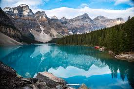
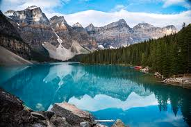

Banff National Park

Banff National Park is in Western Canada in the province of Alberta. It is near the city of Calgary and situated in the Rocky Mountains. Banff is known for its mountains and natural beauty, along with its plant and animal life. The national park fuels the tourist industry in Western Canada.
Banff has many attractions within its borders including numerous lakes fed by glaciers creating an iconic turquoise color. Banff also borders numerous other national parks further boosting its attractiveness as a tourist location. Banff’s glaciers have been shrinking and may disappear in the next few decades.
Photo Gallery
 
